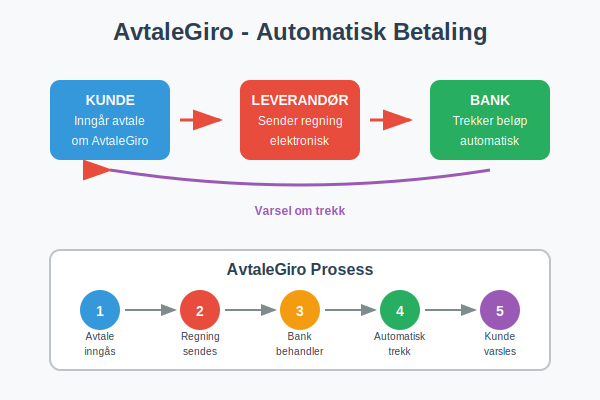
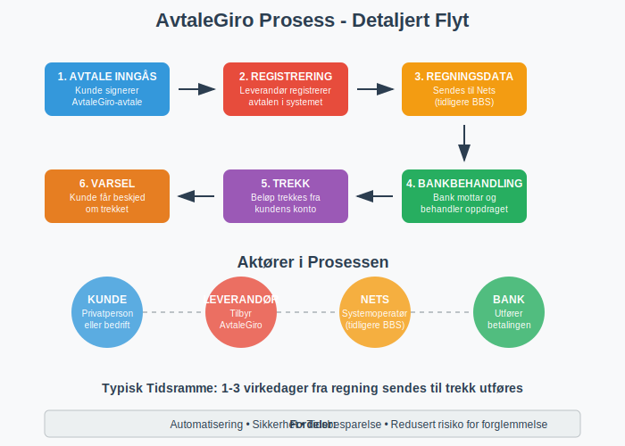
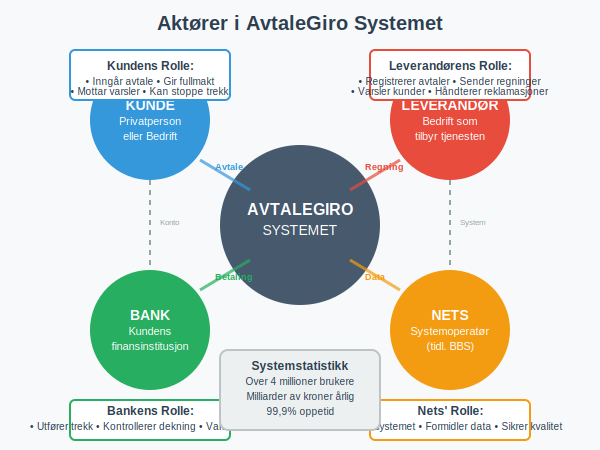
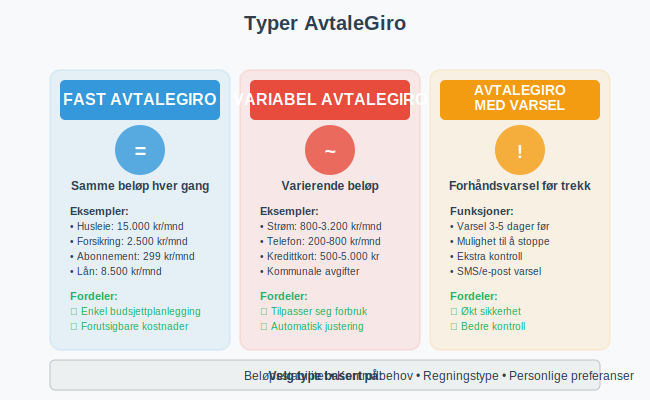
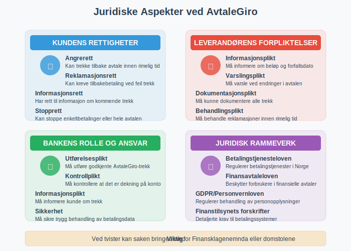
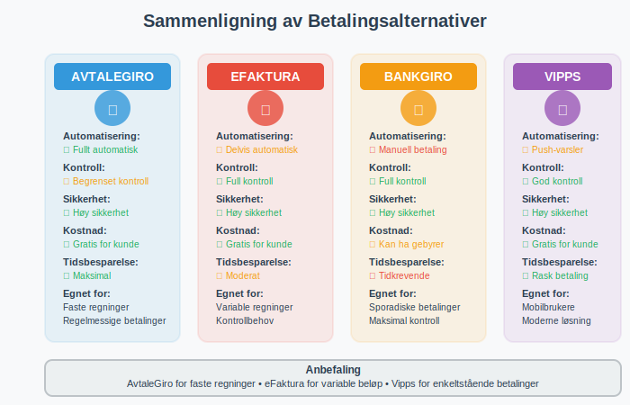

AvtaleGiro er Norges mest brukte system for automatisk betaling av regninger. Dette betalingssystemet gjør det mulig for både privatpersoner og bedrifter å automatisere regelmessige betalinger, slik at regninger betales automatisk fra bankkonto uten manuell inngripen. Som en av de mest populære elektroniske betalingsmidlene i Norge, representerer AvtaleGiro en viktig del av det moderne betalingslandskapet.

Hva er AvtaleGiro?
AvtaleGiro er et elektronisk betalingssystem som ble etablert i Norge på 1990-tallet som en del av det moderne giro-systemet. Systemet gjør det mulig å inngå avtaler med leverandører om automatisk trekk av regninger fra bankkonto på forfallsdato.
Hovedprinsippet er enkelt:
- Kunde inngår avtale med leverandør om AvtaleGiro
- Leverandør sender regningsinformasjon elektronisk til kundens bank
- Banken trekker beløpet automatisk på forfallsdato
- Kunden får varsel om trekket i forkant
Dette systemet brukes av over 4 millioner nordmenn og håndterer milliarder av kroner i betalinger årlig.

Hvordan Fungerer AvtaleGiro?
Teknisk Prosess
AvtaleGiro fungerer gjennom et samarbeid mellom leverandør, bank og kunde:
- Avtale inngås: Kunde signerer AvtaleGiro-avtale med leverandør
- Registrering: Leverandør registrerer avtalen i sitt system
- Regningsdata: Leverandør sender regningsinformasjon til Nets (tidligere BBS)
- Bankbehandling: Kundens bank mottar og behandler betalingsoppdraget
- Trekk: Beløpet trekkes fra kundens konto på forfallsdato
- Varsel: Kunde får beskjed om trekket via bank eller leverandør
For automatisk identifikasjon og avstemming av betalinger brukes ofte KID-nummer som følger med betalingsinformasjonen og sikrer at innbetalinger automatisk knyttes til riktig kunde og avtale.
Aktører i Systemet
- Nets: Operatør av AvtaleGiro-systemet i Norge
- Banker: Behandler betalingsoppdragene
- Leverandører: Bedrifter som tilbyr AvtaleGiro
- Kunder: Privatpersoner og bedrifter som bruker tjenesten

Fordeler med AvtaleGiro
For Privatpersoner
- Automatisering: Slipper å huske å betale regninger
- Tidsbesparelse: Ingen manuell behandling av regninger
- Sikkerhet: Redusert risiko for forglemmelse og purregebyr
- Oversikt: Enkel oppfølging gjennom nettbank
- Fleksibilitet: Kan stoppe eller endre avtaler enkelt
For Bedrifter
- Forbedret arbeidskapital: Raskere innbetaling fra kunder
- Reduserte kostnader: Mindre manuell behandling av betalinger
- Bedre kundeservice: Færre henvendelser om betalinger
- Økt sikkerhet: Redusert risiko for betalingsmisligholdelse
- Automatisert regnskap: Enklere bokføring av innbetalinger
Typer AvtaleGiro
Det finnes flere varianter av AvtaleGiro tilpasset ulike behov:
Fast AvtaleGiro
- Faste beløp: Samme beløp trekkes hver måned
- Eksempler: Husleie, forsikringer, abonnementer
- Forutsigbarhet: Enkel budsjettplanlegging
Variabel AvtaleGiro
- Varierende beløp: Beløpet kan endre seg fra gang til gang
- Eksempler: Strømregninger, telefonregninger, kredittkortregninger
- Fleksibilitet: Tilpasser seg faktisk forbruk
AvtaleGiro med Varsel
- Forhåndsvarsel: Kunde får beskjed før trekk
- Kontroll: Mulighet til å stoppe trekk hvis nødvendig
- Sikkerhet: Ekstra kontroll over betalinger

Oppsett og Administrasjon
Hvordan Sette Opp AvtaleGiro
For Privatpersoner:
- Kontakt leverandør: Be om AvtaleGiro-avtale
- Fyll ut skjema: Oppgi kontonummer og personlige opplysninger
- Signer avtale: Bekreft avtalen skriftlig eller digitalt
- Bekreftelse: Motta bekreftelse fra leverandør og bank
- Aktivering: Avtalen aktiveres innen 1-2 uker
For Bedrifter:
- Kontakt bank: Avklar muligheter for AvtaleGiro som leverandør
- Teknisk oppsett: Implementer nødvendig IT-løsning
- Avtale med Nets: Inngå avtale om bruk av AvtaleGiro-systemet
- Testing: Test systemet før lansering
- Kunderegistrering: Begynn registrering av kunder
Administrasjon av Avtaler
| Handling | Privatperson | Bedrift |
|---|---|---|
| Stoppe avtale | Kontakt leverandør eller bank | Administrer via kundesystem |
| Endre kontonummer | Oppgi nytt kontonummer til leverandør | Oppdater i AvtaleGiro-system |
| Overvåke trekk | Sjekk kontoutskrift i nettbank | Følg opp via rapporter |
| Reklamasjon | Kontakt leverandør innen 8 uker | Håndter kundehenvendelser |
Juridiske Aspekter
Kundens Rettigheter
- Angrerett: Kan trekke tilbake avtale innen rimelig tid
- Reklamasjonsrett: Kan kreve tilbakebetaling ved feil trekk
- Informasjonsrett: Har rett til informasjon om kommende trekk
- Stopprett: Kan stoppe enkeltbetalinger eller hele avtalen
Leverandørens Forpliktelser
- Informasjonsplikt: Må informere om beløp og forfallsdato
- Varslingsplikt: Må varsle ved endringer i avtalen
- Dokumentasjonsplikt: Må kunne dokumentere alle trekk
- Behandlingsplikt: Må behandle reklamasjoner innen rimelig tid
Bankens Rolle
- Utførelsesplikt: Må utføre godkjente AvtaleGiro-trekk
- Kontrollplikt: Må kontrollere at det er dekning på konto
- Informasjonsplikt: Må informere kunde om trekk
- Sikkerhet: Må sikre trygg behandling av betalingsdata

Kostnader og Gebyrer
For Privatpersoner
De fleste banker tilbyr AvtaleGiro gratis for privatpersoner:
- Ingen oppsettgebyr: Gratis å etablere avtaler
- Ingen månedlige kostnader: Ingen løpende gebyrer
- Gratis endringer: Kan endre eller stoppe avtaler uten kostnad
For Bedrifter
Bedrifter må betale for å tilby AvtaleGiro:
| Kostnadselement | Typisk Kostnad | Beskrivelse |
|---|---|---|
| Oppsettgebyr | 5.000 - 15.000 kr | Engangsgebyr for etablering |
| Månedlig abonnement | 200 - 500 kr | Fast månedlig kostnad |
| Per transaksjon | 1 - 3 kr | Gebyr per gjennomført trekk |
| Teknisk integrasjon | 10.000 - 50.000 kr | IT-utvikling og testing |
Sikkerhet og Personvern
Sikkerhetstiltak
- Kryptering: All kommunikasjon er kryptert
- Autentisering: Sterke krav til identifisering
- Overvåking: Kontinuerlig overvåking av systemet
- Backup: Sikre rutiner for datalagring
Personvernhensyn
- Databehandling: Kun nødvendige data behandles
- Lagringstid: Data slettes når ikke lenger nødvendig
- Tilgangskontroll: Begrenset tilgang til sensitive data
- Samtykke: Basert på kundens eksplisitte samtykke
Alternativer til AvtaleGiro
Elektronisk Faktura (eFaktura)
- Forskjell: Kunde må godkjenne hver betaling
- Kontroll: Mer kontroll, men krever mer oppmerksomhet
- Bruksområde: Egnet for varierende regninger
BankGiro
- Manuell betaling: Krever aktiv handling fra kunde for hver faktura
- OCR-avstemming: Automatisk avstemming via BankGiro
- Fleksibilitet: Full kontroll over betalingstidspunkt
- Egnet for: Enkeltbetalinger og varierende regninger
Vipps Regning
- Mobilbetaling: Betaling via mobilapp
- Varsling: Push-varsler om nye regninger
- Moderne: Populært blant yngre brukere

Praktiske Tips
For Privatpersoner
- Start gradvis: Begynn med faste regninger som forsikring
- Overvåk kontoen: Sjekk regelmessig at trekkene er korrekte
- Hold oversikt: Lag liste over alle AvtaleGiro-avtaler
- Budsjetter: Ta hensyn til automatiske trekk i budsjett
- Dekning: Sørg for tilstrekkelig dekning på konto
For Bedrifter
- Kundeservice: Informer kunder godt om AvtaleGiro
- Teknisk kvalitet: Invester i robust IT-løsning
- Oppfølging: Følg opp mislykkede trekk raskt
- Rapportering: Bruk AvtaleGiro-data til regnskapsføring
- Kundeopplevelse: Gjør det enkelt å administrere avtaler
Fremtiden for AvtaleGiro
Teknologiske Utviklinger
- Digitalisering: Mer digital håndtering av avtaler
- Sanntidsbetalinger: Raskere behandling av betalinger
- Kunstig intelligens: Smartere håndtering av unntak
- Mobilintegrasjon: Bedre mobilopplevelse
Markedstrender
- Økt bruk: Fortsatt vekst i antall avtaler
- Nye aktører: Fintech-selskaper utfordrer tradisjonelle banker
- Regulering: Nye EU-reguleringer påvirker systemet
- Bærekraft: Fokus på miljøvennlige betalingsløsninger
Konklusjon
AvtaleGiro er et robust og pålitelig betalingssystem som har revolusjonert måten nordmenn betaler regninger på. For privatpersoner gir det trygghet og bekvemmelighet, mens bedrifter får forbedret likviditet og reduserte kostnader.
Systemets høye sikkerhet og enkle administrasjon gjør det til et naturlig valg for regelmessige betalinger. Med kontinuerlig teknologisk utvikling vil AvtaleGiro fortsette å være en sentral del av det norske betalingslandskapet.
Ved å forstå hvordan AvtaleGiro fungerer, kan både privatpersoner og bedrifter dra nytte av fordelene systemet tilbyr, samtidig som de unngår vanlige fallgruver og utfordringer.